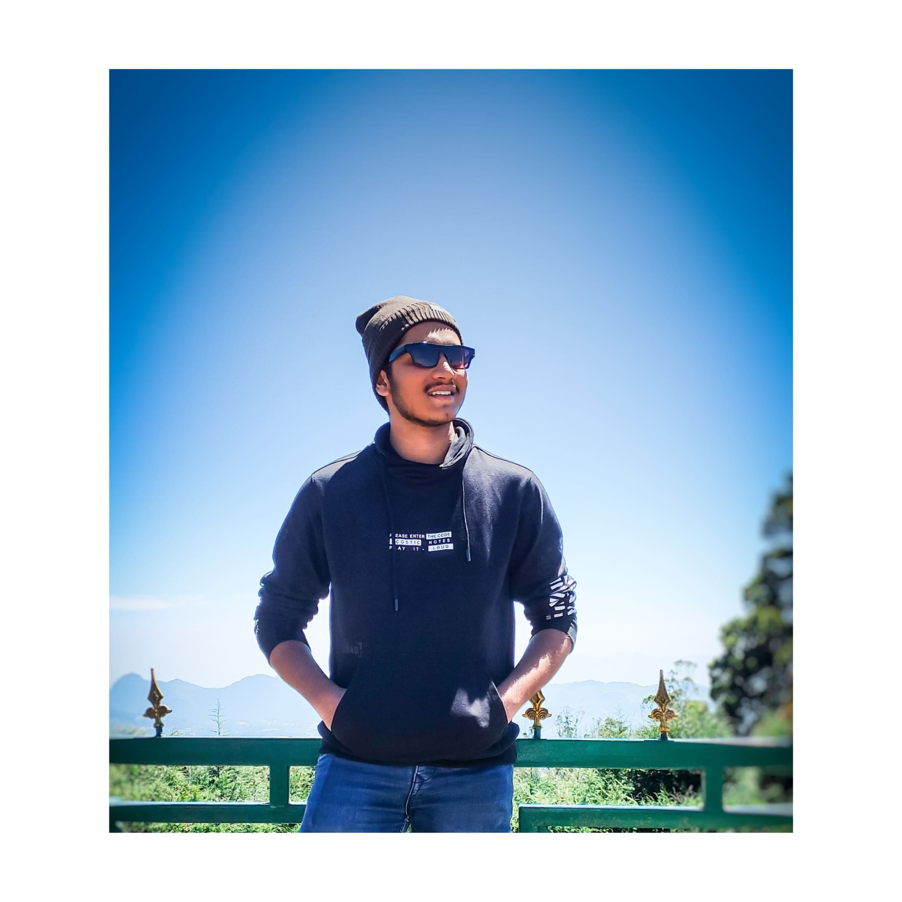

Web Developer
Resolute and skilled fresher in the process of acquiring comprehensive expertise in UI Full Stack Web Development. Proficient in creating responsive and user-friendly interfaces through front-end development, ensuring optimal functionality and seamless user experience. Demonstrated ability to improve website loading speed by 25% through performance optimization techniques. Committed to continuous learning and growth in the field, with a strong passion for delivering efficient solutions and achieving client satisfaction.
October 2021 – January 2022
October 2022 – March 2023